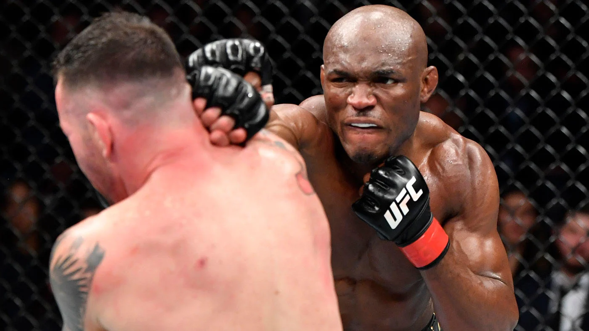
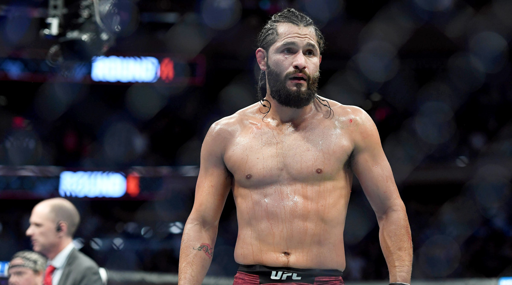

Nate Diaz is one of my all time favorite fighters. He always makes fights entertaining, and will never go down no matter how much damage he has taken, suffering only one knockout out of 35 fights. He has long been known as one of the most durable fighters in the UFC, and is favorited by many because of this. He carries a "screw you" attitude that always makes his fights entertaning, though it doesn't portray him in the best light. He has always been a calm person, but he is fairly unpredictable at times, which makes many tune into his pre-fight confrenceces and pay attention to him outside the octagon. Though retired from the UFC, Diaz has an upcoming boxing bout against Jake Paul, where personally, I beleive he will dominate. 
Usman had long been my favorite fighter when I started getting into MMA. He is strong, resiliant and a skilled grappler and fighter. He had a incredible streak of wins until the fateful Usman v. Edwards fight, where he lost in the last round via knockout. It was an incredible fight, and one that I will talk about later. Usman has always been one for the highlight reel, and if his fights aren't enough, he is a man of great character. He is always kind and respectful, even in a sport where that is rare. He had made it to become champion until he lost the belt to Leon Edwards, the current welterweight champion. 
{kind=link}
{kind=link}